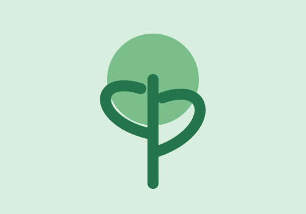

Sobre nosotros

Una idea que crece
EcoVida es un sitio informativo creado para promover hábitos responsables, bienestar y respeto por la naturaleza.
Creemos que cada persona puede aportar con decisiones simples y constantes.
Misión
Compartir información clara y motivadora para construir una comunidad más consciente.